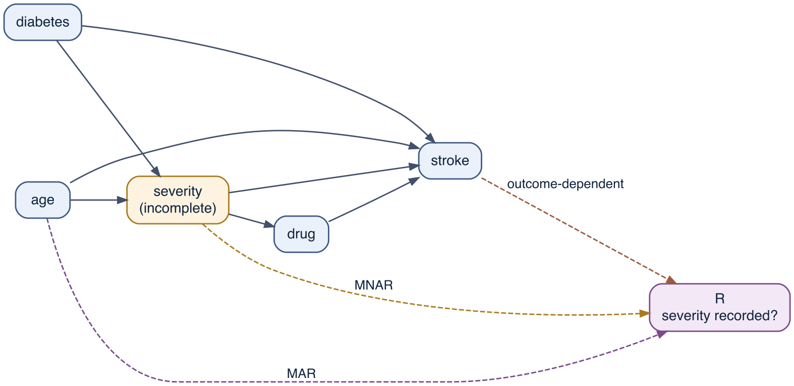
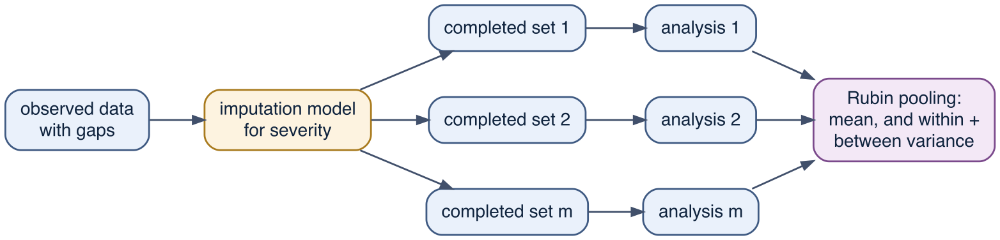
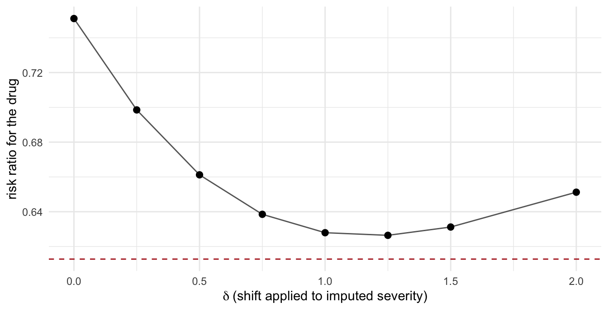

30 DAG-guided missing data and imputation
Every method in this book so far has been applied to a complete data set. Real cohorts are not complete: a laboratory value was never ordered, a questionnaire item was skipped, a patient left the register before the follow-up visit. The usual response is to describe missing data as a nuisance to be repaired, and to choose the technique to do so by reputation — complete-case analysis is crude, multiple imputation is respectable.
That ordering is wrong often enough. Whether an analysis of incomplete data recovers the quantity it is aiming at depends on why the values are missing, and the reason is a causal claim about a variable: the indicator of whether each value was recorded. Once that indicator is placed on the DAG, the question of which method works becomes the same d-separation exercise as Chapter 11. The answer it gives is not the expected one. In the master cohort there is a mechanism — the one the textbook classification treats as the worst option — under which complete-case analysis is unbiased and multiple imputation is badly biased. There is a second under which complete-case analysis returns the correct risk ratio alongside a baseline risk less than half the truth. Which method to use is decided by which of these situations the study is in, and that is a question about the causal structure of the missingness.
This chapter places missingness on the graph, derives what each method estimates, checks the derivations against the master cohort’s answer key, and ends with the case that no method resolves, where the only available response is a sensitivity analysis.
30.1 Missingness as a node on the graph
Write \(L\) for a variable that is sometimes unrecorded — here severity, the confounder that drove the sign reversal of Chapter 12. Define an indicator
\[ R \;=\; \begin{cases} 1 & \text{if } L \text{ is recorded for this patient,}\\ 0 & \text{if it is not.}\end{cases} \]
\(R\) is observed for everyone. What the analyst has is not \(L\) but the pair \((R, L^{*})\), where \(L^{*}\) equals \(L\) when \(R = 1\) and is undefined otherwise. \(R\) is a variable like any other: it has causes, and those causes can be drawn.1 Doing so converts Rubin’s three-way classification2 into three statements about arrows into \(R\):3
- MCAR (missing completely at random): \(R\) has no causes among the study variables. Nothing points into \(R\).
- MAR (missing at random): \(R\) is caused only by variables that are fully observed. Arrows into \(R\) come from recorded variables.
- MNAR (missing not at random): \(R\) is caused by a variable that is itself incompletely recorded — in the leading case, by \(L\).
The analyst who deletes incomplete rows is conditioning on \(R = 1\), and conditioning on a variable has consequences that Chapter 11 already established. Complete-case analysis is therefore the same selection problem as the collider bias of Chapter 11 and the hospitalisation example of Chapter 18: whether it distorts an association depends on where the selection node is attached.4 This yields a rule that can be read off the graph.
What complete-case analysis estimates
A regression of \(Y\) on \((A, C)\) fitted to complete cases estimates \(P(Y \mid A, C, R = 1)\). That equals the target \(P(Y \mid A, C)\) whenever
\[ R \;\perp\!\!\!\perp\; Y \;\mid\; A,\, C , \]
that is, whenever \(R\) is d-separated from the outcome given the exposure and the covariates already in the model.
Two consequences follow, and both contradict the usual ordering of methods:
- An arrow \(L \to R\) is permitted. \(L\) is in the adjustment set, so conditioning on it blocks that path. Complete-case analysis can be unbiased under MNAR.
- An arrow \(Y \to R\) is not permitted, whatever the mechanism is called. Missingness caused by the outcome leaves the complete-case analysis without a guarantee, even though it is, in Rubin’s sense, missing at random. (Whether the damage is visible depends on the effect measure; the cohort below is a case where a rare outcome hides it on the ratio scale and not on the absolute scale.)
The condition is about the conditional model. A standardised quantity — a marginal risk, a risk difference, anything that averages predictions over a population — has a second requirement, because the population being averaged over is now the complete cases rather than the cohort. Chapter 28 made the point that the target population is part of the estimand; deleting rows changes it silently. The two requirements come apart in the results below, and it is worth separating them in advance: the first governs whether the coefficients are right, the second whether the standardisation is.
Multiple imputation exchanges these assumptions for a different set. It does not condition on \(R = 1\); it draws the missing values from a model for \(L\) given everything else, and so requires that model to be correct for the rows where \(L\) is missing — rows in which, by construction, \(L\) was never seen. That is a strong assumption, and it is the assumption that fails when \(L \to R\).5 The two methods therefore rest on different conditions, neither of which implies the other, which is why the choice between them has to be made from the graph rather than from a ranking.6
30.2 The cohort with holes in it
The master cohort of Chapters 12 and 28: 50 000 hypertensive patients, the question of whether Drug A prevents stroke, and confounding by indication strong enough to reverse the crude association. severity is the confounder that has to be adjusted for, and it is the variable we now remove.
df <- simulate_cohort(n = 50000, seed = 2024)
df$age_c <- (df$age - 62) / 10 # base assignment keeps the oracle attribute
truth_x <- cohort_truth(df) # the answer keyFour mechanisms are applied to the same cohort, each deleting about a quarter of the severity values, and each differing only in what determines which quarter. The MAR variant is the severity_mar column that simulate_cohort() already supplies, in which the probability of a missing value rises with age; the other three are constructed here on the same pattern.
set.seed(11)
n <- nrow(df)
df$sev_mcar <- ifelse(rbinom(n, 1, 0.25) == 1, NA, df$severity)
df$sev_mar <- df$severity_mar # R <- age
df$sev_out <- ifelse(rbinom(n, 1, plogis(-1.29 + 0.5 * df$age_c +
2.0 * df$stroke)) == 1, NA, df$severity)
df$sev_mnar <- ifelse(rbinom(n, 1, plogis(-2.54 + 2.5 * df$severity)) == 1,
NA, df$severity)
MECH <- c(MCAR = "sev_mcar", MAR = "sev_mar",
`outcome-dependent` = "sev_out", MNAR = "sev_mnar")The four have nearly identical missingness rates, so nothing in a completeness summary separates them. What separates them is which patients are missing, and only part of that is legible in recorded variables.
| mechanism | % missing | mean age | mean severity | % stroke |
|---|---|---|---|---|
| MCAR | 25.0 | 62.1 / 62.1 | 0.14 / 0.12 | 4.8 / 4.8 |
| MAR | 25.4 | 67.0 / 60.4 | 0.34 / 0.05 | 6.1 / 4.3 |
| outcome-dependent | 25.1 | 66.4 / 60.7 | 0.36 / 0.04 | 13.5 / 1.8 |
| MNAR | 25.2 | 67.1 / 60.4 | 1.34 / -0.28 | 9.1 / 3.3 |
The MCAR column shows no separation at all. The MAR column separates on age, which is recorded, so the imbalance is visible and correctable. The outcome-dependent column separates on stroke — also recorded, so this too is MAR in Rubin’s sense, and the naming is the first sign that the classification is not tracking what matters. The MNAR column separates on severity itself, and that is the row of the table a real analyst never sees: the mean severity among patients with missing severity is not an observable quantity. Every claim about MNAR is a claim about an unobservable, which is why this chapter ends in a sensitivity analysis rather than an estimate.
30.3 The reference: what the complete data would have given
The adjustment set comes from the DAG and not from the data: severity, age and diabetes are the common causes of treatment and stroke, and sbp is a mediator that stays out (Chapter 15). The outcome model is the Poisson working model with a log link used throughout Part V — the Bayesian counterpart of modified-Poisson regression — so that the drug enters as a multiplicative factor on risk.7 Effects are obtained as standardised predictions from the fitted model rather than read off as coefficients, in line with the convention of Chapter 28.
FML <- stroke ~ drug + severity + age_c + diabetes
# g-computation on a fitted model: predict the cohort under drug = 0 and drug = 1,
# average, contrast. `newdata` names the population the estimate is standardised to.
eff <- function(fit, newdata = NULL) {
p <- avg_predictions(fit, variables = list(drug = 0:1), newdata = newdata)
c(EY0 = p$estimate[1], EY1 = p$estimate[2],
RD = p$estimate[2] - p$estimate[1], RR = p$estimate[2] / p$estimate[1])
}
ref <- eff(glm(FML, family = poisson(), data = df)) # severity fully observed| quantity | complete data | oracle truth |
|---|---|---|
| E[Y(0)] | 0.0677 | 0.0681 |
| E[Y(1)] | 0.0415 | 0.0409 |
| risk difference | -0.02620 | -0.02724 |
| risk ratio | 0.6127 | 0.6001 |
The complete-data analysis is the benchmark for everything that follows. It does not reproduce the oracle to the last digit — the risk ratio is 0.613 against a true 0.600 — because the additive working model imposes a constant log risk ratio that the data-generating process does not quite have. That residual gap is a model-specification question, treated in Chapter 28, and it is not a missing-data question. Holding it fixed is what makes the comparisons below interpretable: a method that reproduces 0.6127 has recovered everything the missing values were carrying.
30.4 Deleting rows, and filling in a mean
The two reflexive responses are to drop incomplete rows and to substitute a summary value for the gap.
cc_fit <- function(col) {
d <- df; d$severity <- d[[col]]
obs <- !is.na(d$severity)
eff(glm(FML, family = poisson(), data = d[obs, ])) # standardised to complete cases
}
mean_fit <- function(col) {
d <- df; d$severity <- d[[col]]
d$severity[is.na(d$severity)] <- mean(d$severity, na.rm = TRUE)
eff(glm(FML, family = poisson(), data = d))
}| mechanism | complete case: RR | mean substitution: RR | complete case: RD | mean substitution: RD | complete case: EY0 | mean substitution: EY0 |
|---|---|---|---|---|---|---|
| MCAR | 0.602 | 0.791 | -0.02726 | -0.01171 | 0.0684 | 0.0560 |
| MAR | 0.605 | 0.834 | -0.02422 | -0.00898 | 0.0613 | 0.0539 |
| outcome-dependent | 0.615 | 1.182 | -0.00990 | +0.00777 | 0.0257 | 0.0427 |
| MNAR | 0.608 | 1.049 | -0.01705 | +0.00224 | 0.0435 | 0.0461 |
Mean substitution fails everywhere, including under MCAR, where nothing about the missingness is informative. Its risk ratios are pulled toward 1.18, the value obtained by leaving severity out of the model altogether. The reason is not subtle: replacing a quarter of a confounder’s values with a constant destroys a quarter of its covariation with treatment and outcome, so the variable can no longer do the adjusting it was included to do. Partial adjustment for a confounder is not partial protection from confounding, and under two of the four mechanisms the partially adjusted estimate crosses the null and reports the drug as harmful. The same argument applies to the missing-indicator method, which adds a binary flag and sets the gaps to an arbitrary constant; it is unbiased only under conditions close to MCAR and is not recommended in observational work.
Row deletion leaves the risk ratio near the reference under all four mechanisms. Under MCAR and MAR that is what the graph rule predicts. Under MNAR it is also what the rule predicts, and it is the first of the chapter’s two reversals: the mechanism the taxonomy treats as the worst case is harmless here, because severity is in the adjustment set and conditioning on it blocks the \(L \to R\) path.
Under outcome-dependent missingness the rule predicts a biased ratio, and the ratio is not visibly biased. The rule is not wrong; this cohort is a special case, and the reason is worth stating because it does not generalise. Selection that depends on the outcome given the covariates leaves the odds ratio of a logistic model unchanged — the principle that makes case-control sampling work — and with an outcome as rare as stroke the risk ratio is close to the odds ratio. A common outcome would separate the two and the ratio would move. What generalises is the d-separation rule, not this column of numbers; and nothing in the argument protects the absolute risks.
On the absolute scale, row deletion fails under three of the four mechanisms, and this is the second requirement coming apart from the first. Under MAR, MNAR and outcome-dependent missingness the complete-case risk ratio is at or near the reference while \(E[Y(0)]\) is not: the model is right, but it has been standardised over the complete cases, who are younger (MAR), less severely ill (MNAR), or much less likely to have had a stroke (outcome-dependent) than the cohort. Under the last of these the estimated baseline risk is 0.0257 against a reference of 0.0677, and the risk difference is understated by 62%; under MNAR it is understated by 35%. The estimate answers a question about a population that no one chose. Correcting it would require standardising the fitted model over the cohort’s covariate distribution — which cannot be done, because that distribution includes the severity values that are missing. This is the sharpest argument for imputation, and it is not the usual one: even when deletion estimates the conditional model without bias, it cannot deliver a marginal causal contrast for the population that was actually studied.
30.5 Multiple imputation
Multiple imputation replaces each missing value not with one number but with \(m\) draws from its predictive distribution given the observed data, producing \(m\) complete data sets.8 Each is analysed by the method that would have been used on complete data, and the \(m\) answers are combined by Rubin’s rules: the estimate is the average, and the variance adds the average within-imputation variance to the between-imputation variance, the second term being what represents the uncertainty due to the missing values.

# Rubin's rules for one scalar estimate q with variance u, over m imputations.
rubin <- function(q, u) {
m <- length(q)
qbar <- mean(q) # pooled point estimate
ubar <- mean(u) # within-imputation variance
B <- var(q) # between-imputation variance
Tv <- ubar + (1 + 1 / m) * B # total variance
c(est = qbar, se = sqrt(Tv), fmi = (1 + 1 / m) * B / Tv)
}The last element, the fraction of missing information, is the share of the total variance contributed by not knowing the missing values. It is the quantity to report alongside an imputed estimate, and the usual guidance is to take \(m\) at least as large as the percentage of incomplete cases, so we use \(m = 20\) here.9
The consequential decision is not \(m\) but which variables enter the imputation model. The imputation model must preserve every association that the substantive model will later estimate; if it omits a variable, it imputes values for which that variable’s association with severity is zero, and the analysis inherits the attenuation. In particular the outcome belongs in the imputation model, which strikes many analysts as circular and is not: the imputation model is a description of the joint distribution of the observed data, not a causal claim, and stroke is one of the observed variables that carries information about a patient’s severity.10 The requirement that the imputation model be compatible with the substantive model is the congeniality condition, and imputation methods built to enforce it are available when the substantive model contains interactions or non-linear terms.11
mi_run <- function(col, m = 20, with_outcome = TRUE, delta = 0) {
d <- df; d$severity <- d[[col]]
miss <- is.na(d$severity)
vars <- c("severity", "age_c", "diabetes", "drug", if (with_outcome) "stroke")
imp <- mice(d[, vars], m = m, method = "norm", printFlag = FALSE, seed = 7)
done <- complete(imp, "all")
q <- u <- numeric(m); E <- matrix(NA_real_, m, 4)
for (i in seq_len(m)) {
x <- done[[i]]
x$stroke <- d$stroke # stroke is never missing; restore it when the
# imputation model was fitted without it
x$severity[miss] <- x$severity[miss] + delta # MNAR sensitivity shift, 0 by default
fit <- glm(FML, family = poisson(), data = x)
lr <- avg_comparisons(fit, variables = "drug", comparison = "lnratioavg")
q[i] <- lr$estimate; u[i] <- lr$std.error^2
E[i, ] <- eff(fit)
}
list(pooled = rubin(q, u), eff = setNames(colMeans(E), c("EY0", "EY1", "RD", "RR")))
}Show code
mi_yes <- map(MECH, mi_run) # outcome in the imputation model
mi_no <- map(MECH, mi_run, with_outcome = FALSE) # outcome left out| mechanism | MI: RR | 95% interval | MI: RD | fraction missing info | MI: RR, outcome omitted | complete case: RD |
|---|---|---|---|---|---|---|
| MCAR | 0.614 | (0.554, 0.681) | -0.02609 | 0.06 | 0.722 | -0.02726 |
| MAR | 0.603 | (0.543, 0.670) | -0.02721 | 0.10 | 0.747 | -0.02422 |
| outcome-dependent | 0.611 | (0.547, 0.683) | -0.02637 | 0.20 | 0.963 | -0.00990 |
| MNAR | 0.752 | (0.679, 0.832) | -0.01440 | 0.10 | 0.924 | -0.01705 |
Three readings of the table.
Leaving the outcome out of the imputation model biases every mechanism, including MCAR, and in the same direction as mean substitution: toward the estimate that ignores severity. This is the most common error in applied practice and the easiest to avoid.
With the outcome included, imputation handles MCAR, MAR and the outcome-dependent mechanism, and it handles them on both scales — including the absolute risks that complete-case analysis lost. Because imputation retains every patient, the estimate is standardised over the cohort rather than over the survivors of a deletion rule, so the target population is the intended one. That is the case for imputation, and it is a real one: missingness caused by the outcome is common, since patients who have the event are investigated differently.
Under MNAR, imputation is biased and complete-case analysis is not. The imputed values are drawn as though patients with missing severity resembled recorded patients with the same age, diabetes, treatment and outcome. They do not: they were selected for having high severity, and no feature of the observed data reveals it. The imputation model fills the gaps with values that are too low, weakening the measured confounder, and the estimate moves from 0.613 toward 1.18, the value obtained by not adjusting for severity at all. This is the reversal the chapter opened with, and it is a documented property of the two methods rather than an artefact of this simulation.12
30.6 Separating bias from sampling noise
A single missingness draw cannot distinguish a systematic error from a lucky one. Repeating the deletion many times on the same cohort holds the sampling variability of the cohort fixed and isolates what the missingness mechanism does.
R_REP <- 60
draw_missing <- function(k) {
switch(k,
MCAR = rbinom(n, 1, 0.25) == 1,
MAR = rbinom(n, 1, plogis(-1.2 + 0.6 * df$age_c)) == 1,
`outcome-dependent` = rbinom(n, 1, plogis(-1.29 + 0.5 * df$age_c +
2.0 * df$stroke)) == 1,
MNAR = rbinom(n, 1, plogis(-2.54 + 2.5 * df$severity)) == 1)
}
set.seed(99)
rep_res <- map_dfr(seq_len(R_REP), function(i) {
map_dfr(names(MECH), function(k) {
d <- df; d$severity[draw_missing(k)] <- NA
obs <- !is.na(d$severity)
cc <- eff(glm(FML, family = poisson(), data = d[obs, ]))
imp <- mice(d[, c("severity", "age_c", "diabetes", "drug", "stroke")],
m = 5, method = "norm", printFlag = FALSE, seed = 100 + i)
mi <- rowMeans(sapply(complete(imp, "all"),
function(x) eff(glm(FML, family = poisson(), data = x))))
tibble(mechanism = k,
`complete case: RR` = cc["RR"], `complete case: RD` = cc["RD"],
`imputation: RR` = mi[4], `imputation: RD` = mi[3])
})
})| mechanism | complete case: RR | complete case: RD | imputation: RR | imputation: RD |
|---|---|---|---|---|
| MCAR | 0.612 (-0.001, se 0.002) | -0.02632 (-0.00012) | 0.611 (-0.001, se 0.001) | -0.02635 (-0.00015) |
| MAR | 0.623 (+0.011, se 0.002) | -0.02303 (+0.00318) | 0.615 (+0.003, se 0.001) | -0.02598 (+0.00023) |
| outcome-dependent | 0.614 (+0.001, se 0.006) | -0.00981 (+0.01640) | 0.620 (+0.007, se 0.003) | -0.02564 (+0.00056) |
| MNAR | 0.598 (-0.014, se 0.002) | -0.01698 (+0.00922) | 0.766 (+0.153, se 0.001) | -0.01345 (+0.01275) |
The replication confirms the reading of the single draw and sharpens it in one respect: the two scales disagree about which method is in trouble. On the risk ratio, complete-case analysis carries no material bias under any of the four mechanisms — the outcome-dependent column included, for the rare-outcome reason given above — while imputation carries a large one under MNAR. On the risk difference, complete-case analysis is badly biased under outcome-dependent missingness and MNAR, and imputation is biased only under MNAR. Neither method dominates. Imputation is the better default, because it fails under one mechanism rather than two and because it delivers the absolute quantities; but under MNAR it is the worse of the two, and no diagnostic run on the observed data distinguishes MNAR from MAR.
Two cautions about reading a table of this kind. The bias figures are conditional on the outcome model being correct: the working model imposes a constant log risk ratio while the cohort’s true log risk ratio varies slightly with severity, so the quantity being targeted is a weighted average whose weights shift when the composition of the analysed sample shifts. Small residual biases in these columns can come from that rather than from the missing data. And the replication holds one cohort fixed and redraws only the missingness, which is what isolates the mechanism; it does not describe the sampling variability an analyst faces, which the credible intervals in the earlier table do.
30.7 Imputation as Bayesian inference
Rubin’s rules are a device for combining separate analyses, and the separation is an artefact of doing the imputation and the analysis in two programs. A missing value is an unknown quantity; a Bayesian model treats unknown quantities as parameters and gives them a posterior. Fitting the imputation model and the substantive model jointly therefore requires no pooling rule at all: the missing severity values are sampled alongside the coefficients, and every posterior draw of the causal contrast already carries the uncertainty that Rubin’s between-imputation variance was constructed to approximate.13
brms expresses this with mi(). One submodel describes severity; the outcome model refers to it with mi(severity) rather than to the observed column.
Because each missing value becomes a parameter, the cost of the joint model scales with the number of gaps rather than with the number of patients — 12 500 extra parameters at the full cohort size. The demonstration therefore uses a 10 000-patient subsample, with complete-case and imputation estimates recomputed on the same subsample so that the three are comparable.
sub <- df[1:10000, ]
sub$sevobs <- sub$sev_mar # the MAR mechanismpri <- c(prior(normal(-3, 1), class = "Intercept", resp = "stroke"),
prior(normal(0, 0.5), class = "b", resp = "stroke"))
f_joint <-
bf(stroke ~ mi(sevobs) + drug + age_c + diabetes, family = poisson()) +
bf(sevobs | mi() ~ age_c + diabetes + drug, family = gaussian()) +
set_rescor(FALSE)
jm <- brm(f_joint, data = sub, prior = pri,
chains = 4, iter = 1000, warmup = 500, seed = 1,
file = "models/ch29_joint_mar", file_refit = "on_change")The fit carries one parameter per missing value, so a single maximum \(\hat{R}\) over all parameters is dominated by the 2 547 imputed values and says little about the coefficients. The two groups are worth separating.
Show code
rh <- brms::rhat(jm)
c(max_rhat_coefficients = max(rh[!grepl("^Ymi_", names(rh))], na.rm = TRUE),
max_rhat_imputed = max(rh[ grepl("^Ymi_", names(rh))], na.rm = TRUE),
divergent = sum(subset(brms::nuts_params(jm), Parameter == "divergent__")$Value))max_rhat_coefficients max_rhat_imputed divergent
1.004868 1.019632 0.000000 Both are acceptable and there are no divergent transitions. This model needs appreciably more sampling than the single-response fits of Chapter 28 to reach that point: at two chains of 700 iterations the coefficients had not mixed, with \(\hat{R}\) above 1.05.
Note what the severity submodel does not contain: stroke. In the two-stage procedure the outcome had to be written into the imputation model by hand, and omitting it was the error that biased every row of the earlier table. Here the joint likelihood supplies it automatically. A missing severity value appears in both submodels, so its posterior is informed by the outcome model’s likelihood as well as by the severity model’s, and the association between severity and stroke is preserved without the analyst having to remember to preserve it. What must still be specified is drug. Severity causes treatment rather than the reverse, so an arrow from drug to severity would be wrong as a causal claim — but the severity submodel is not a causal model. It is a conditional distribution used to fill gaps, and leaving drug out of it would impute severity values in which the confounding by indication has been erased, which is the same failure as omitting the outcome. The exercises ask what that costs.
| method | risk ratio | interval |
|---|---|---|
| complete data (subsample) | 0.589 | -- |
| complete case | 0.595 | -- |
| multiple imputation, m = 20 | 0.595 | -- |
| joint Bayesian model | 0.635 | (0.511, 0.784) |
The three incomplete-data methods agree to within the posterior interval, which is the result to take from the table. The joint estimate is the highest of them, and the reason is the prior rather than the imputation: normal(0, 0.5) on the log risk ratio pulls an estimate near \(\log 0.59 = -0.53\) a few per cent toward zero, and at this subsample size the likelihood is not sharp enough to override it entirely. That is a property of the Bayesian fit, not of the way the missing values were handled, and Chapter 22 is where the choice of prior is examined.
The joint model is not a different assumption set — it is MAR-based like the imputation it replaces, and it fails under MNAR for the same reason. What it removes is a class of implementation error: the imputation model cannot be left uncongenial with the substantive model, because there is only one model. What it adds is cost. Every missing value is a parameter, so the fit is larger and slower than the two-stage procedure by a wide margin, and the sampler needs more iterations to mix.
30.8 Weighting rather than filling in
Methods for incomplete data divide into two families. Imputation models the distribution of the missing values given what was observed. Weighting models the occurrence of the missingness and fills in nothing: the records that survive are re-weighted so that each one stands for the records like it that did not.14 Choosing between the two is a choice about which model the analyst is prepared to specify.
In the setting of this chapter the weighting approach is not complicated. Fit a model for \(P(R = 1 \mid \text{observed})\), keep the complete records, and weight each by the inverse of its fitted probability. The estimate is consistent under the same MAR condition that licenses imputation, and it is generally the less efficient of the two, because an incomplete record contributes nothing beyond its contribution to the weight model whereas imputation uses whatever it does contain.15 That comparison is a property of the static problem posed here. It does not generalise, and the reason is the subject of the rest of this section.
30.8.1 Two weights for two missing-data problems
Consider a cohort followed over visits \(k = 0, \dots, K\), with treatment \(A_k\), time-varying covariates \(L_k\), and a censoring indicator \(C_k\) recording whether the patient is still under observation. An overbar denotes history, so \(\bar A_{k-1}\) is treatment through the previous visit. Two quantities are missing, for different reasons.
The first is the counterfactual outcome. Under a treatment strategy \(\bar a\), the quantity \(Y^{\bar a}\) is unobserved for every patient who did not follow \(\bar a\), and who followed it was decided by \(\bar L\). The stabilised inverse-probability-of-treatment weight is the running product of Chapter 14,
\[SW^A = \prod_{k} \frac{P(A_k = a_k \mid \bar A_{k-1})} {P(A_k = a_k \mid \bar A_{k-1}, \bar L_k)} .\]
The second is the outcome itself, unobserved for anyone who left the study before it occurred — through dropout, through loss to follow-up, or, in a per-protocol analysis, through an artificial censoring imposed at the visit where the patient stopped following the assigned strategy.16 The inverse-probability-of-censoring weight has the same form, with remaining uncensored in place of taking the treatment:
\[SW^C = \prod_{k} \frac{P(C_k = 0 \mid \bar C_{k-1} = 0, \bar A_{k-1})} {P(C_k = 0 \mid \bar C_{k-1} = 0, \bar A_{k-1}, \bar L_k)} .\]
The marginal structural model is then fitted on uncensored person-time with the product \(W = SW^A \times SW^C\).17 18 In the resulting pseudo-population, treatment at each visit is unrelated to \(\bar L\) and nobody has been lost to follow-up, which is the population the causal contrast is defined in.
The two weights correct structurally different biases. Confounding arises from a common cause of treatment and outcome; selection bias, including the bias from informative censoring, arises from conditioning on a common effect.19 That one device repairs both is a property of weighting and not a sign that the two are the same problem.
30.8.2 Why the efficiency comparison does not carry over
In the static problem, weighting and imputation both work and weighting is the less efficient. In the longitudinal problem the comparison does not arise, because regression adjustment does not work at all. When \(L_k\) confounds \(A_k \to Y\) and is also a consequence of \(A_{k-1}\), conditioning on it blocks part of the effect and omitting it leaves confounding, and this is true whether \(L_k\) is fully observed or imputed without error (Chapter 14). Weighting is used there because it identifies the effect, not because it is the cheaper of two valid options.
The imputation member of the pair in that setting is not multiple imputation but the g-formula: model \(P(L_k \mid \text{past})\) and \(P(Y \mid \text{past})\), then simulate the cohort forward under the strategy of interest (Chapter 28). It fills in the counterfactual trajectory in the way multiple imputation fills in a covariate. The two families therefore correspond at both levels:
| Problem | Model the missingness | Model the missing values |
|---|---|---|
| Incomplete covariate | Inverse probability weighting | Multiple imputation |
| Time-varying treatment | IPTW and IPCW, in a marginal structural model | The g-formula |
The correspondence is not a symmetry of costs, and the g-formula carries a failure mode that weighting does not. In some settings consistent with the conditions that motivate the method — identifiability holds, and the measured time-varying confounders are affected by past treatment — misspecification of the g-formula’s component models is guaranteed. This is the g-null paradox, named for the hypothesis under which it operates: if treatment has no effect on the outcome at any time, the usual parametric models for the components cannot all be correct, and a parsimoniously specified g-formula will generally return a non-null estimate of an effect that is absent. The response is to avoid overly parsimonious models for the components rather than to abandon the method, and the magnitude of the resulting bias is a quantity that can be examined rather than a reason to prefer weighting by default.20 A marginal structural model is not exposed to the paradox, because the causal null is a value its parameter can take: a treatment coefficient of zero describes a null effect without contradicting anything else in the model.
30.8.3 The Bayesian version
Weighting is not a likelihood, so an inverse-probability estimate has no posterior of its own and its interval is a sandwich or bootstrap construction. This makes weighting appear to be the frequentist member of the pair and imputation the Bayesian one, which is misleading in both directions.
A Bayesian treatment of weighting exists, and it takes the pseudo-population seriously as a data-generating mechanism. The weights are then derived from the posterior predictive treatment-assignment and censoring probabilities rather than from fitted point estimates, which is also the answer to how uncertainty in the weight models should propagate into the marginal structural model.21 What this yields is a Bayesian importance sampling scheme, not a Bayesian imputation scheme. Nothing is drawn for a missing value; what is drawn is the probability that determines how much each observed record counts.
The two cannot simply be merged into one joint model, and the obstacle is feedback. In the joint model of the previous section the coupling between submodels is wanted: mi() draws severity from a submodel containing stroke, and that is what makes the imputation congenial. Apply the same coupling to a treatment-assignment model and the outcome data flow back into it, the fitted probabilities cease to be a function of the assignment mechanism alone, and the balancing property the weights rely on is lost. Implementations therefore keep the two fits separate by construction, for example by estimating the marginal structural model parameters with a Bayesian bootstrap.22
This reverses one of the rules of this chapter. Rule 4 below requires the outcome to appear in the model for the incomplete variable, because omitting it imputes away the association the analysis is about. In weighting, the outcome must be kept out of the weight models. The underlying condition is the same one stated from the other side: an imputation model is good when it borrows the outcome’s information, and a weight model is valid when it does not.
30.8.4 Where the two families meet
Because one family models the missingness and the other the missing values, an estimator can use both and require only one of them to be correct. Doubly robust estimators are consistent if either the weight models or the outcome models are correctly specified, and are typically more efficient than weighting alone and less reliant on extrapolation than imputation alone.23 For the configuration described here — treatment weights and censoring weights together, augmented by outcome regressions — the longitudinal case has been worked out for dropout and truncation by death, and the point-treatment case for missingness in the exposure, the outcome or a confounder.24
Two practical points. The product \(SW^A \times SW^C\) has a heavier right tail than either factor, so weights that are acceptable for treatment and acceptable for censoring can be unusable once multiplied; diagnose the two distributions separately before combining them, report the distribution of the product, and treat truncation as a bias–variance trade rather than a repair.25 And whether censoring weights are required at all depends on the graph and on the estimand, since a relative and an absolute measure are not equally vulnerable to loss to follow-up.26
30.9 When the mechanism is not ignorable
Under MNAR neither method recovers the answer, and no amount of computation changes that, because the information required is not in the data. The distribution of severity among patients whose severity was not recorded is not identified. What can be done is to state a range of assumptions about it and report how the conclusion moves across that range.
The standard device is delta adjustment: impute under MAR, then shift every imputed value by a fixed amount \(\delta\) before analysis.27 Here \(\delta\) is the number of severity units by which patients with unrecorded severity exceed otherwise similar patients with recorded severity. \(\delta = 0\) is the MAR analysis; increasing \(\delta\) encodes progressively stronger selection.
Show code
deltas <- c(0, 0.25, 0.5, 0.75, 1.0, 1.25, 1.5, 2.0)
delta_rr <- map_dbl(deltas, ~ mi_run("sev_mnar", m = 10, delta = .x)$eff["RR"])
The curve, not any point on it, is the output of the analysis, and it supports three statements of different strength.
The magnitude is not robust. At \(\delta = 0\) — the MAR analysis anyone would report by default — the risk ratio is 0.751. Across a range of \(\delta\) that no observed quantity can rule out it falls to 0.626, close to the complete-data reference of 0.613. Since severity has a standard deviation of about 1.1, the shift that does the work is roughly one standard deviation, which is a substantial but not outlandish claim about who goes unmeasured. Any report of the MAR estimate alone overstates what is known about the size of the effect.
The direction is robust. Every point on the curve is well below 1, so the qualitative conclusion — the drug is protective — survives the whole range. That is the statement to make, and it is weaker than the one the MAR analysis appeared to license. Where the qualitative conclusion does change somewhere in the plausible range, the value of \(\delta\) at which it changes is the tipping point, and reporting it converts an unanswerable question into one a subject-matter reader can assess: is it credible that patients whose severity went unrecorded were this much sicker than comparable patients whose severity was recorded?
The device itself is limited. The curve approaches the reference near \(\delta =\) 1.25 and then turns back rather than crossing. A constant shift moves the mean of the imputed values, and the true mechanism did more than shift a mean: selecting on severity truncated the distribution, changing its spread and its association with treatment as well. Delta adjustment explores one direction in a much larger space of departures from MAR, so a sensitivity analysis that stays flat is weaker evidence of robustness than it appears.
Two further remarks. \(\delta\) is not estimable; choosing it is an external judgement, and the appropriate report is the range over which conclusions hold rather than a preferred value. Placing a prior on \(\delta\) instead of stepping along a grid gives the Bayesian version of the same analysis and is preferable when genuine information about the mechanism exists.28 And the limit is not a limit of imputation. A weighting analysis is in the same position for the same reason: the assumption about the unrecorded values has to be supplied from outside, whether it enters the distribution of the imputed values or the model for \(R\).
Choosing a method for incomplete data
- Draw \(R\) on the DAG. Ask what caused each variable to go unrecorded, and add those arrows. Do this before choosing a method.
- Check whether \(R\) is d-separated from the outcome given the model’s variables. If it is, complete-case analysis estimates the conditional model without bias — including under MNAR.
- Ask whether the estimand is conditional or standardised. A marginal risk, a risk difference or any g-computation is standardised over a population, and deleting rows changes that population. This is a reason to impute even when deletion would estimate the coefficients correctly.
- If imputing, put the outcome and every analysis variable in the imputation model. Omitting a variable imputes away its association. A joint Bayesian model enforces this by construction.
- Report the fraction of missing information, not only the missingness rate.
- If any arrow runs from an incomplete variable into \(R\), report a sensitivity analysis, not a point estimate. Give the range over which the conclusion holds, and the tipping point if there is one inside that range.
- Do not choose between methods by comparing standard errors. Precision and bias are separate questions, and single-value substitution scores well on the first precisely because it treats filled-in values as though they had been observed.
- Weighting is the alternative to imputing, not a weaker form of it. Model \(R\) and re-weight the complete records when the missingness model is the one that can be specified with confidence, or when the estimand requires it — as it does for a time-varying treatment, where no imputation of the confounder identifies the effect.
30.10 What imputation does not fix
The chapter has held the adjustment set fixed throughout, which conceals the larger limitation. Every result above compares a method against the complete-data analysis, and the complete-data analysis is only as good as the identification argument behind it. If severity were an incomplete measurement of a confounder rather than the confounder itself, imputing its missing values perfectly would still leave the estimate confounded. Imputation recovers information that the data contain and the analyst has lost; it creates none. A variable never measured on anyone is not a missing-data problem and is not treated by any technique in this chapter — it is the subject of Chapter 19.
Two smaller cautions follow from the same point. Diagnostics on imputed data check the imputation model’s fit to the observed values, so they can detect a badly specified predictive distribution but cannot detect MNAR: the two mechanisms are observationally equivalent by construction. And a test of MCAR, where one is reported, does not license a MAR-based analysis, because the alternative to MCAR includes both MAR and MNAR and the test cannot separate them.
30.11 Key points
- Missingness is a variable with causes. Adding the indicator \(R\) to the DAG turns the choice of method into a d-separation question and replaces the MCAR / MAR / MNAR labels with something that can be reasoned about.
- Complete-case analysis conditions on \(R = 1\). It estimates the conditional model without bias whenever \(R \perp Y \mid A, C\) — which permits an arrow from the incomplete variable into \(R\), and forbids one from the outcome. Complete-case analysis is therefore valid under some MNAR mechanisms and invalid under some MAR ones.
- A standardised estimate has a second requirement. Deleting rows changes the population the estimate is standardised to, so marginal risks and risk differences are wrong even when the coefficients are right. This is the argument for imputing that survives even when deletion is unbiased for the regression.
- Single-value substitution is not a weak version of imputation but a different and worse procedure. Mean substitution and the missing-indicator method attenuate the confounder and here move the estimate across the null, under every mechanism including MCAR.
- The imputation model must contain every variable the analysis will use, including the outcome. Omitting the outcome biased every mechanism in this chapter. A joint Bayesian model with
mi()enforces congeniality by construction and returns a posterior directly, with no pooling rule. - Neither method dominates. In the master cohort, imputation repairs the outcome-dependent missingness that defeats deletion on the absolute scale, and deletion survives an MNAR mechanism that drags imputation back toward the confounded estimate.
- Weighting and imputation are two families, not one. Imputation models the missing values; weighting models the missingness and fills in nothing. In the static problem of this chapter they are alternatives and imputation is the more efficient. For a time-varying treatment the choice narrows to weighting or the g-formula, and dropout enters the same fit as a second missing-data problem handled by a censoring weight.
- MNAR is not identified. The response is a sensitivity analysis — delta adjustment, and a reported range over which the conclusion holds — not a better estimator. A flat sensitivity curve is weaker reassurance than it looks, because a constant shift explores only one direction in the space of departures from MAR.
30.12 Exercises
Read the graph, then check it. For each of the four mechanisms, state from Figure 30.1 alone whether complete-case analysis should be unbiased for the conditional model, before looking at any output. Then construct a fifth mechanism in which \(R\) depends on
drugonly, predict the behaviour of both methods, and verify it by replication.The subsample joint model without
drug. Refitjmwith the severity submodelsevobs | mi() ~ age_c + diabetes, droppingdrug. Compare the risk ratio with the correctly specified fit. Explain, in terms of the cohort’s structural equations, why an arrow that runs from severity to drug nonetheless requiresdrugto appear on the right-hand side of the severity submodel.Fraction of missing information. Repeat the MAR imputation with \(m = 2, 5, 20, 50\) and record the pooled estimate, its standard error and the fraction of missing information. Which of the three stabilises last, and what does that imply for the usual advice about choosing \(m\)?
Missingness in the exposure and in the outcome. Delete 25% of
drugvalues under a mechanism of your choice, then 25% ofstrokevalues, and repeat the comparison. Which of the two is more damaging, and does the d-separation rule of this chapter still identify the cases where deletion is safe?The rare-outcome escape. Complete-case analysis kept the risk ratio under outcome-dependent missingness because stroke is rare and the odds ratio is preserved under selection on the outcome. Raise the baseline risk by refitting the cohort with
simulate_cohort(params = modifyList(default_params(), list(r0 = 0.25))), repeat the outcome-dependent deletion, and report what happens to the complete-case risk ratio. Does multiple imputation still repair it? State the general rule your two results support.A sensitivity analysis to report. Using the MNAR variant, extend the delta sweep to the risk difference and its credible interval rather than the point estimate of the risk ratio. Over what range of \(\delta\) does the interval continue to exclude zero? Write the two-sentence conclusion you would put in a paper, and mark which quantity in it is an assumption rather than an estimate.
Conceptual. A reviewer objects that including
strokein the imputation model forseverityis circular, sinceseverityis then used to predictstroke. Write a reply. Then describe a situation in which the reviewer’s objection would be correct — that is, where conditioning on the outcome during imputation does damage — and relate it to the collider discussion of Chapter 11.The outcome, in and out. The joint model of this chapter requires
strokein the submodel forseverity, whereas a treatment-weight model requires that the outcome be kept out. State the criterion each rule serves, and say what fails if the two are swapped. Then decide which of the two rules a censoring-weight model follows, and justify the answer from the definition of the pseudo-population rather than by analogy.
Mohan K, Pearl J, “Graphical Models for Processing Missing Data,” J Am Stat Assoc 2021;116:1023-1037 (DOI). Not indexed in PubMed; citation verified against the publisher’s record.↩︎
Rubin DB, “Inference and missing data,” Biometrika 1976;63:581-592 (DOI). Not indexed in PubMed; citation verified against the publisher’s record.↩︎
Daniel RM, Kenward MG, Cousens SN, De Stavola BL, “Using causal diagrams to guide analysis in missing data problems,” Stat Methods Med Res 2012;21:243-256 (DOI); Moreno-Betancur M, Lee KJ, Leacy FP, White IR, Simpson JA, Carlin JB, “Canonical Causal Diagrams to Guide the Treatment of Missing Data in Epidemiologic Studies,” Am J Epidemiol 2018;187:2705-2715 (DOI).↩︎
Westreich D, “Berkson’s bias, selection bias, and missing data,” Epidemiology 2012;23:159-164 (DOI).↩︎
White IR, Carlin JB, “Bias and efficiency of multiple imputation compared with complete-case analysis for missing covariate values,” Stat Med 2010;29:2920-2931 (DOI).↩︎
Hughes RA, Heron J, Sterne JAC, Tilling K, “Accounting for missing data in statistical analyses: multiple imputation is not always the answer,” Int J Epidemiol 2019;48:1294-1304 (DOI).↩︎
Zou G, “A modified Poisson regression approach to prospective studies with binary data,” Am J Epidemiol 2004;159:702-706 (DOI).↩︎
van Buuren S, Groothuis-Oudshoorn K, “mice: Multivariate Imputation by Chained Equations in R,” J Stat Softw 2011;45:1-67 (DOI). Not indexed in PubMed; citation verified against the journal’s record.↩︎
White IR, Royston P, Wood AM, “Multiple imputation using chained equations: Issues and guidance for practice,” Stat Med 2011;30:377-399 (DOI).↩︎
Sterne JAC, White IR, Carlin JB, Spratt M, Royston P, Kenward MG, Wood AM, Carpenter JR, “Multiple imputation for missing data in epidemiological and clinical research: potential and pitfalls,” BMJ 2009;338:b2393 (DOI).↩︎
Bartlett JW, Seaman SR, White IR, Carpenter JR, “Multiple imputation of covariates by fully conditional specification: Accommodating the substantive model,” Stat Methods Med Res 2015;24:462-487 (DOI). The congeniality condition is due to Meng XL, “Multiple-Imputation Inferences with Uncongenial Sources of Input,” Statist Sci 1994;9:538-558 (DOI), which is not indexed in PubMed; that citation was verified against the publisher’s record.↩︎
White IR, Carlin JB, “Bias and efficiency of multiple imputation compared with complete-case analysis for missing covariate values,” Stat Med 2010;29:2920-2931 (DOI).↩︎
Erler NS, Rizopoulos D, van Rosmalen J, Jaddoe VWV, Franco OH, Lesaffre EMEH, “Dealing with missing covariates in epidemiologic studies: a comparison between multiple imputation and a full Bayesian approach,” Stat Med 2016;35:2955-2974 (DOI).↩︎
Seaman SR, Vansteelandt S, “Introduction to Double Robust Methods for Incomplete Data,” Stat Sci 2018;33:184-197 (DOI).↩︎
Seaman SR, White IR, “Review of inverse probability weighting for dealing with missing data,” Stat Methods Med Res 2013;22:278-295 (DOI).↩︎
Hernán MA, Robins JM, “Per-Protocol Analyses of Pragmatic Trials,” N Engl J Med 2017;377:1391-1398 (DOI).↩︎
Robins JM, Hernán MA, Brumback B, “Marginal structural models and causal inference in epidemiology,” Epidemiology 2000;11:550-560 (DOI).↩︎
Robins JM, Finkelstein DM, “Correcting for noncompliance and dependent censoring in an AIDS Clinical Trial with inverse probability of censoring weighted (IPCW) log-rank tests,” Biometrics 2000;56:779-788 (DOI).↩︎
Hernán MA, Hernández-Díaz S, Robins JM, “A structural approach to selection bias,” Epidemiology 2004;15:615-625 (DOI).↩︎
McGrath S, Young JG, Hernán MA, “Revisiting the g-null Paradox,” Epidemiology 2022;33:114-120 (DOI). The paradox is due to Robins JM, Wasserman LA, “Estimation of Effects of Sequential Treatments by Reparameterizing Directed Acyclic Graphs,” in Proceedings of the Thirteenth Conference on Uncertainty in Artificial Intelligence, Morgan Kaufmann, 1997:409-420 (arXiv), which is not indexed in PubMed; that citation was verified against the conference proceedings record.↩︎
Saarela O, Stephens DA, Moodie EEM, Klein MB, “On Bayesian estimation of marginal structural models,” Biometrics 2015;71:279-288 (DOI); Capistrano ESM, Moodie EEM, Schmidt AM, “Bayesian estimation of the average treatment effect on the treated using inverse weighting,” Stat Med 2019;38:2447-2466 (DOI), which adopts the Bayesian bootstrap in order to avoid the feedback that arises when a joint likelihood is used.↩︎
Saarela O, Stephens DA, Moodie EEM, Klein MB, “On Bayesian estimation of marginal structural models,” Biometrics 2015;71:279-288 (DOI); Capistrano ESM, Moodie EEM, Schmidt AM, “Bayesian estimation of the average treatment effect on the treated using inverse weighting,” Stat Med 2019;38:2447-2466 (DOI), which adopts the Bayesian bootstrap in order to avoid the feedback that arises when a joint likelihood is used.↩︎
Seaman SR, Vansteelandt S, “Introduction to Double Robust Methods for Incomplete Data,” Stat Sci 2018;33:184-197 (DOI).↩︎
Shardell M, Hicks GE, Ferrucci L, “Doubly robust estimation and causal inference in longitudinal studies with dropout and truncation by death,” Biostatistics 2015;16:155-168 (DOI); Williamson EJ, Forbes A, Wolfe R, “Doubly robust estimators of causal exposure effects with missing data in the outcome, exposure or a confounder,” Stat Med 2012;31:4382-4400 (DOI).↩︎
Cole SR, Hernán MA, “Constructing inverse probability weights for marginal structural models,” Am J Epidemiol 2008;168:656-664 (DOI).↩︎
Howe CJ, Cole SR, Lau B, Napravnik S, Eron JJ, “Selection Bias Due to Loss to Follow Up in Cohort Studies,” Epidemiology 2016;27:91-97 (DOI).↩︎
Leacy FP, Floyd S, Yates TA, White IR, “Analyses of Sensitivity to the Missing-at-Random Assumption Using Multiple Imputation With Delta Adjustment: Application to a Tuberculosis/HIV Prevalence Survey With Incomplete HIV-Status Data,” Am J Epidemiol 2017;185:304-315 (DOI).↩︎
Kawabata E, Major-Smith D, Clayton GL, Shapland CY, Morris TP, Carter AR, Fernández-Sanlés A, Borges MC, Tilling K, Griffith GJ, Millard LAC, Davey Smith G, Lawlor DA, Hughes RA, “Accounting for bias due to outcome data missing not at random: comparison and illustration of two approaches to probabilistic bias analysis: a simulation study,” BMC Med Res Methodol 2024;24:278 (DOI).↩︎